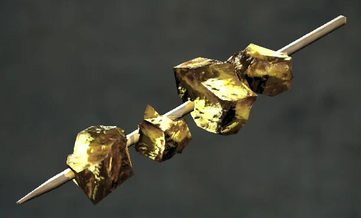

Iguana Bits Skewers

"The tastiest treat in the Wasteland, and definitely not made from ‘recycled’ meats… probably."
Ingredients
- 1 cup of diced iguana meat (or substitute with beef or tofu)
- ½ cup of Mystery Sauce™ (ketchup + BBQ sauce + a splash of vinegar)
- 2 Blamco Mac & Cheese noodles, crushed (for garnish)
- 4 wooden skewers (or sharpened junk metal)
- Thread the iguana meat onto skewers, alternating with small pieces of carrot flower if available.
- Brush generously with Mystery Sauce™—the more mysterious, the better.
- Grill over a fire powered by irradiated wood until slightly charred.
- Sprinkle crushed Blamco Mac & Cheese for a crunchy garnish.
Wasteland Wisdom: Make friends with a trader—they usually know where the “safe” iguana meat comes from.